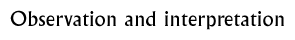

Discussion 7  |
|
Objectives: To teach pupils how to observe an object and to consider how interpretation plays a role in the way that we look at objects from other cultures.
Materials: A selection of ancient Indian objects.
Class set-up: Small groups or entire class.
Vocabulary: observation, interpretation
Discussion: Show pupils a modern object that they are not familiar with. Ask them to
describe what they see. Encourage them to keep their comments restricted to what they can actually see rather
than what they think the object is. Make a list of their observations on the board or on a large sheet of paper.
What do you see? Describe what you see.
Now ask them to make statements about the object based upon the evidence from their observations. Ask them to support their guesses with evidence. Record all of their guesses. Ask them to consider another piece of information about the object, such as what material it is made of, or how big it is (if it is in a photograph or picture).How might it change your ideas about this object if I told that it was made of gold? Divide the class into small groups and give each group an object. Ask them to go through the same process with the new object, then ask them to share their results with the rest of the class. You could also set up stations around the room with objects, and have the groups rotate so that they visit and examine several different objects. You could then have them compare their ideas and outcomes about interpretation and evidence-gathering. Wrap up the discussion by encouraging the children to consider how the observation and interpretation of objects and artefacts might affect how we think about and understand ancient civilizations. Background information:
Seals
How to decipher an unknown script
© The British Museum |